정보처리산업기사 (2014-05-25 기출문제)
1과목: 데이터 베이스
1. 오너-멤버(owner-member) 관계와 관련되는 논리적 데이터 모델은?
- 관계형 데이터 모델
- 네트워크 데이터 모델
- 계층형 데이터 모델
- 분산 데이터 모델
(정답률: 79%)

2. 다음 ( ) 안의 내용으로 알맞은 것은?
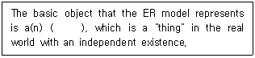
- model
- entity
- domain
- relation
(정답률: 68%)
3. 정렬 알고리즘 선택 시 고려하여야 할 사항으로 거리가 먼 것은?
- 데이터의 양
- 초기 데이터의 배열상태
- 키 값들의 분포상태
- 운영체제의 종류
(정답률: 78%)
4. 순수 관계 연산자 중 Select 연산의 연산자 기호는?
- π
- ∇
- ∪
- σ
(정답률: 70%)
5. 뷰(view)에 대한 설명으로 옳지 않은 것은?
- 뷰로 구성된 내용에 대하여 삽입, 삭제, 갱신 연산에 제약이 없다.
- 실제 저장된 데이터 중에서 사용자가 필요한 내용만을 선별해서 볼 수 있다.
- 데이터 접근 제어로 보안을 제공한다.
- 실제로는 존재하지 않는 가상의 테이블이다.
(정답률: 77%)
6. 널(NULL) 값에 대한 설명으로 부적합한 것은?
- 부재(missing) 정보를 의미한다.
- 알려지지 않은 값을 의미한다.
- 영(zero)의 값을 의미한다.
- 널(NULL) 값은 혼란을 야기할 수 있다.
(정답률: 81%)
7. 관계해석에 대한 설명으로 거리가 먼 것은?
- 원하는 정보와 그 정보를 어떻게 유도하는가를 기술하는 절차적인 언어이다.
- 기본적으로 관계해석과 관계대수는 관계 데이터베이스를 처리하는 기능과 능력면에서 동등하다.
- 튜플 관계해석과 도메인 관계해석이 있다.
- 프레디키트 해석(predicate calculus)에 기반을 두고 있다.
(정답률: 72%)
8. 개체-관계 모델에서 사용하는 기호와 그 의미의 연결이 옳지 않은 것은?
- 사각형 - 개체 타입
- 타원 - 속성
- 선 - 개체 타입과 속성 연결
- 화살표 - 관계 타입
(정답률: 71%)
9. 데이터베이스 스키마의 설명으로 옳지 않은 것은?
- 스키마는 데이터베이스의 구조와 제약조건에 관한 전반적인 명세를 기술한다.
- 외부 스키마는 응용프로그래머가 데이터베이스를 바라보는 관점이다.
- 개념 스키마는 조직이나 기관의 총괄적 입장에서 본 데이터베이스의 전체적인 논리적 구조이다.
- 하나의 데이터베이스 시스템에는 내부, 외부, 개념 스키마가 각각 하나씩만 존재한다.
(정답률: 71%)
10. 해싱에 대한 다음 설명의 ( ) 안 내용으로 옳은 것은?
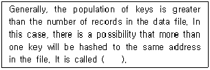
- collision
- slot
- bucket
- key
(정답률: 65%)
11. 데이터베이스의 특성으로 옳은 내용 모두를 나열한 것은?
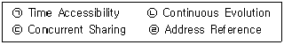
- (ㄱ), (ㄴ), (ㄷ)
- (ㄴ), (ㄹ)
- (ㄱ), (ㄴ), (ㄹ)
- (ㄱ), (ㄴ), (ㄷ), (ㄹ)
(정답률: 61%)
12. 다음 SQL 명령 중 DML에 해당하는 항목 모두를 나열한 것은?
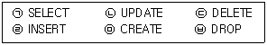
- (ㄱ), (ㅂ)
- (ㄴ), (ㄹ), (ㅁ)
- (ㄱ), (ㄴ), (ㄷ), (ㄹ)
- (ㄱ), (ㄴ), (ㄷ), (ㄹ), (ㅂ)
(정답률: 79%)
13. 큐(Queue)에 대한 설명으로 옳지 않은 것은?
- 입력은 리스트의 한 끝에서, 출력은 그 상대편 끝에서 일어난다.
- 운영체제의 작업 스케줄링에 사용된다.
- 오버플로우는 발생될 수 있어도 언더플로우는 발생되지 않는다.
- 가장 먼저 삽입된 자료가 가장 먼저 삭제되는 FIFO방식으로 처리된다.
(정답률: 72%)
14. 자료를 구조에 따라 분류할 경우, 성격이 나머지 셋과 다른 하나는?
- 스택
- 그래프
- 큐
- 데크
(정답률: 83%)
15. 다음 트리에 대한 운행 결과의 순서가 “D→B→A→G→E→H→C→F” 일 경우, 적용된 운행 기법은?
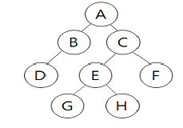
- Post-order
- In-order
- Last-order
- Pre-order
(정답률: 69%)
16. 다음 자료에 대하여 삽입(Insertion) 정렬을 이용하여 오름차순으로 정렬하고자 할 경우 1회전 후의 결과는?
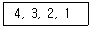
- 3, 4, 2, 1
- 1, 3, 2, 4
- 1, 4, 3, 2
- 3, 2, 1, 4
(정답률: 70%)
17. 애트리뷰트 간에 존재하는 여러 가지 종속 관계를 분석해서 기본적으로 하나의 종속성이 하나의 릴레이션으로 표현되도록 분해하는 과정을 정규화라고 한다. 정규화의 원칙으로 거리가 먼 것은?
- 하나의 스키마에서 다른 스키마로 변환시킬 때 정보의 손실이 있어서는 안된다.
- 데이터의 종속성이 많아야 한다.
- 하나의 독립된 관계성은 하나의 독립된 릴레이션으로 분리시켜 표현한다.
- 데이터의 중복성이 감소되어야 한다.
(정답률: 78%)
18. 결정자가 후보 키가 아닌 함수 종속을 제거하는 정규화 단계는?
- 비정규 릴레이션 → 1NF
- 1NF → 2NF
- 2NF → 3NF
- 3NF → BCNF
(정답률: 59%)
19. 다음 그림에서 단말 노드(Terminal Node)의 개수는?
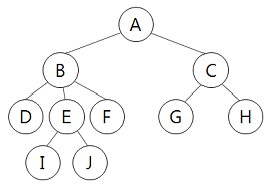
- 3
- 4
- 6
- 10
(정답률: 58%)
20. 릴레이션에 대한 설명으로 적합하지 않은 것은?
- 릴레이션은 릴레이션 스키마와 릴레이션 인스턴스로 구성된다.
- 릴레이션 스키마는 한 릴레이션의 논리적 구조를 기술한 것이다.
- 릴레이션 인스턴스는 구조를 나타내며, 릴레이션 스키마는 실제 값들을 나타낸다.
- 릴레이션의 스키마는 정적인 성질을 가지며, 릴레이션 인스턴스는 동적인 성질을 가진다.
(정답률: 49%)
2과목: 전자 계산기 구조
21. 고정소수점 수에서 10비트로써 표현할 수 있는 수의 범위는? (단, 2의 보수로 표현)
- -511 ~ 511
- -511 ~ 512
- -512 ~ 511
- -512 ~ 512
(정답률: 56%)
22. 입출력 제어 장치의 역할이 아닌 것은?
- 데이터 버퍼링
- 제어 신호의 논리적 변환
- 제어 신호의 물리적 변환
- DMA 제어
(정답률: 48%)
23. 콘솔(console) 장치의 기능이 아닌 것은?
- 입출력 장치의 선택
- 컴퓨터 동작의 개시와 정지
- 컴퓨터 동작 상태의 변경
- data의 관리
(정답률: 64%)
24. 한 번 기억한 내용을 외부로부터 지워버릴 수 없는 기억방식은?
- dynamic memory
- writable memory
- RAM
- ROM
(정답률: 66%)
25. 가상 메모리(virtual memory)에 대한 설명으로 틀린 것은?
- 운영체제가 제어한다.
- 매핑 테이블이 있어야 한다.
- 미스율(miss rate)이 높다.
- 논리적 공간을 주소화한 것이다.
(정답률: 65%)
26. CPU의 제어장치 구성으로 옳은 것은?
- 누산기, 명령 해독기, 신호 발생기
- 명령 레지스터, 플래그 레지스터, 신호 발생기
- 명령 레지스터, 명령 해독기, 인터페이스기
- 명령 레지스터, 명령 해독기, 신호 발생기
(정답률: 60%)
27. 데이지 체인(daisy-chain) 우선순위 인터럽트에 대한 설명으로 틀린 것은?
- 하드웨어 우선순위 인터럽트 장치로써 직렬로 연결한다.
- 우선순위가 가장 높은 장치를 선두에 연결한다.
- 인터럽트 요구 선은 모든 장치에 공통이며, 와이어드 논리(wired-logic)로 연결되어 있다.
- 마스크 레지스터를 사용하여 우선순위를 결정한다.
(정답률: 43%)
28. 산술적 시프트(shift)에 대한 설명으로 옳은 것은?
- 산술적 시프트는 오른쪽 방향으로 한 비트씩 이동시킨다.
- 산술적 시프트는 Rotate와 동일하다.
- 산술적 시프트는 논리적 시프트와 동일하다.
- 산술적 시프트는 곱셈과 나눗셈의 보조역할에 이용된다.
(정답률: 52%)
29. 다음과 같은 진리표를 갖는 게이트는?
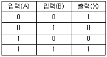
- XOR게이트
- NOR 게이트
- NAND 게이트
- XNOR 게이트
(정답률: 52%)
30. 마이크로오퍼레이션에 관한 설명 중 옳은 것은?
- 마이크로 오퍼레이션을 동기시키는 방법으로 동기 고정식과 동기 가변식이 있다.
- 동기 고정식은 CPU 시간의 효율적 이용은 가능하나 제어가 복잡하다.
- 동기 가변식은 CPU 시간의 낭비를 초래하지만 제어회로가 간단하다.
- 마이크로 사이클은 마이크로 오퍼레이션과 무관하다.
(정답률: 66%)
31. 하나의 전가산기를 구성하는데 필요한 반가산기는 최소 몇 개 인가?
- 5
- 4
- 3
- 2
(정답률: 70%)
32. 논리적 연산 중 2의 보수 가산 회로로서 정수 곱셈과정에서 필요하지 않은 것은?
- AND
- COMPLEX
- COMPLEMENT
- Shift
(정답률: 40%)
33. Branch 혹은 Jump 명령문은 결국 다음 중 어느 Register를 수정하는가?
- Accumulator
- MAR(Memory Address Register)
- MBR(Memory Buffer Register)
- PC(Program Counter)
(정답률: 46%)
34. 오퍼랜드가 레지스터를 지정하고, 그 레지스터 값이 실제 데이터가 기억되어 있는 주소를 지정하는 방식은?
- 직접 주소지정방식
- 간접 주소지정방식
- 상대 주소지정방식
- 레지스터 간접 주소지정방식
(정답률: 38%)
35. 디스크의 회전 속도가 60rpm이고, 트랙(track)당 16 섹터(sector)이며, 섹터 당 512byte를 저장하는 1장의 단면 디스크로 구성된 디스크 시스템이 한 개의 이동식 읽기/쓰기 헤드를 가지고 있다면 최대 데이터 전송 속도는 몇 bps 인가?
- 8 kbps
- 16 kbps
- 32 kbps
- 64 kbps
(정답률: 33%)
36. DASD(direct access storage device)의 기능과 관계가 없는 것은?
- 직접호출(direct access)
- 랜덤호출(random access)
- 순차호출(sequential access)
- 간접호출(indirect access)
(정답률: 48%)
37. 명령 코드가 명령을 수행할 수 있도록 필요한 기능을 제공하여 주는 역할을 하는 것은?
- 누산기
- 제어 장치
- 레지스터
- 번지 필드(field)
(정답률: 44%)
38. 주기억장치의 속도가 CPU의 속도에 비해 현저히 늦다. 명령어의 수행 속도를 CPU의 속도와 유사하도록 하고자 할 때 사용되는 기억장치는?
- Cache 기억장치
- Virtual 기억장치
- Segment 기억장치
- 복수 모듈 기억장치
(정답률: 71%)
39. 2진수 (1101.01)2를 10진수로 표현하면?
- 13.25
- 13.5
- 15.25
- 15.5
(정답률: 69%)
40. 8비트로 표현되는 부호와 절대치의 방식에서 -50을 1비트 우측으로 시프트(shift) 했을 때 옳은 것은?
- 10011000
- 11011000
- 11011001
- 10011001
(정답률: 43%)
3과목: 시스템분석설계
41. 다음과 같이 코드를 부여할 대상의 이름이나 약호를 코드의 일부분으로 사용하는 코드화 방법은?
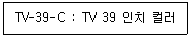
- 순서 코드(Sequence Code)
- 그룹 분류 코드(Group Classification Code)
- 블록 코드(Block Code)
- 연상 기호 코드(Mnemonic Code)
(정답률: 68%)
42. 입력 설계 단계 중 입력 정보 내용에 관한 설계 시 고려사항이 아닌 것은?
- 입력 항목명
- 입력 항목의 순서 및 배열
- 입력 정보에 대한 오류 검사
- 입력 정보의 수집 시기 및 주기
(정답률: 39%)
43. 소프트웨어 위기 발생 원인으로 거리가 먼 것은?
- 소프트웨어의 유지보수 어려움과 이에 따른 비용 증가
- 소프트웨어에 대한 관리소홀로 비효율적 자원 통제
- 소프트웨어의 생산성 및 품질 저하
- 소프트웨어 개발속도가 하드웨어 개발 속도 추월
(정답률: 71%)
44. 시스템 흐름도에 대한 설명으로 가장 적절한 것은?
- 시스템에 있어서 데이터의 발생으로부터 처리 과정 및 처리된 정보의 배분, 축적하는 전 공정을 도식화한 것이다.
- 컴퓨터의 입력, 처리, 출력되는 하나의 처리 과정을 그림으로 효시한 것이다.
- 설계서에 따라 프로그래머가 작성한 것으로 컴퓨터에 의한 처리 내용 및 조건, 입출력 데이터의 종류와 출력 등을 컴퓨터의 기능에 맞게 논리적으로 정확하게 전개한 것이다.
- 블록을 이용하여 표시하며 상호간에 순서과 관련 상태를 선으로 연결한 것이다.
(정답률: 41%)
45. 시스템의 특성 중 다음 설명에 해당하는 것은?
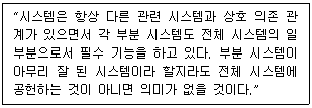
- 자동성
- 종합성
- 목적성
- 제어성
(정답률: 71%)
46. 출력 설계 단계 중 출력 정보 분배에 대한 설계 시 고려사항으로 거리가 먼 것은?
- 분배 책임자
- 분배의 방법 및 형태
- 분배의 주기 및 시기
- 분배 항목 명칭
(정답률: 47%)
47. 다음 코드 설계 단계 중 가장 마지막 단계는?
- 코드의 문서화
- 코드 대상 항목 결정
- 사용 범위와 기간 결정
- 코드화 방식 결정
(정답률: 74%)
48. 시스템의 평가 항목 중 시스템 요건에서 제시된 시스템 목표 및 목적 등의 기능을 정확하게 수행하는지를 평가하는 것은?
- 가격 평가
- 신뢰성 평가
- 성능 평가
- 기능 평가
(정답률: 42%)
49. 코드 설계 시 유의사항으로 옳지 않은 것은?
- 코드 처리 시 집계가 편리해야 하고, 기억과 판단이 쉬워야 한다.
- 사람이 알기 쉬워야 한다.
- 코드 분류 기준에 따라 분류가 용이해야 한다.
- 자료 항목의 증가로 인한 코드의 추가는 제한적이어야 한다.
(정답률: 74%)
50. 컴퓨터 입력 단계에서의 체크 방법으로 원시 자료를 기간 별로 그룹화 하여 수작업으로 합계를 계산한 후 컴퓨터에서 처리된 결과와 비교하여 오류를 검사하는 방법은?
- 한계 체크(Limit Check)
- 균형 체크(Balance Check)
- 대조 체크(Matching Check)
- 일괄 합계 체크(Batch Total Check)
(정답률: 48%)
51. 오류 검사의 종류 중 산술 연산 시 “0(Zero)" 으로 나눈 경우의 여부를 검사하는 것은?
- impossible check
- sign check
- overflow check
- unmatched record check
(정답률: 49%)
52. 모듈의 특징으로 옳지 않은 것은?
- 모듈은 독립적으로 실행되지만, 각 모듈의 컴파일은 서로 결합되어 종속적으로 수행된다.
- 모듈의 이름으로 호출하여 다수가 이용할 수 있다.
- 모듈마다 사용할 변수를 정의하지 않고 상속하여 사용할 수 있다.
- 변수의 선언을 효율적으로 하여 기억장치를 유용하게 사용할 수 있다.
(정답률: 53%)
53. 객체가 메시지를 받아 실행해야 할 객체의 구체적인 연산을 정의한 것은?
- Instance
- Method
- Message
- Class
(정답률: 67%)
54. 자료 흐름도의 구성 요소가 아닌 것은?
- 자료사전(Data Dictionary)
- 종착지(Terminator)
- 자료저장장소(Data Store)
- 자료흐름(Data Flow)
(정답률: 57%)
55. 소프트웨어 수명주기 모형 중 사용자의 요구사항을 정확히 파악하기 위하여 실제 개발될 시스템에 대한 시제품을 만들어 최종 결과물에 대한 예측이 가능한 모형은?
- 점증적 모형
- 폭포수 모형
- 코딩과 수정 모형
- 프로토타이핑 모형
(정답률: 66%)
56. 입력 방식의 종류 중 현장 정보를 기록한 원시 전표를 전산 부서에서 일정한 주기로 수집하여, 일괄적으로 입력 매체를 작성하는 방식은?
- 분산 입력 방식
- 집적 입력 방식
- 집중 입력 방식
- 턴어라운드(반환) 입력 방식
(정답률: 59%)
57. 럼바우의 객체지향 분석 기법에서 상태 다이어그램과 밀접한 관계가 있는 것은?
- Object Modeling
- Dynamic Modeling
- Function Modeling
- Total Modeling
(정답률: 45%)
58. 동일한 파일 형식을 가지고 있는 두 개 이상의 파일을 하나로 정리하는 처리 패턴은?
- 갱신(update)
- 병합(merge)
- 대조(match)
- 정렬(sort)
(정답률: 78%)
59. 문서화의 목적과 거리가 먼 것은?
- 유지보수 용이성 향상
- 시스템 개발 요령과 순서의 표준화를 통한 효율적 작업 지원
- 개발팀에서 운용팀으로의 인수, 인계 용이
- 효율적인 개발 비용 산출
(정답률: 65%)
60. 시스템의 기본 요소 중 목표 달성을 위해서 이루어지는 모든 작업들을 통제 조정하는 것은?
- Control
- Feedback
- Process
- Input
(정답률: 66%)
4과목: 운영체제
61. 분산처리 운영체제 시스템에 대한 설명으로 옳지 않은 것은?
- 중앙 집중형 시스템에 비해 소프트웨어 개발이 쉽다.
- 여러 사용자들이 데이터를 공유할 수 있다.
- 시스템의 점진적 확장이 용이하다.
- 사용 가능도가 향상된다.
(정답률: 69%)
62. 로더의 기능이 아닌 것은?
- compile
- allocation
- linking
- relocation
(정답률: 54%)
63. 분산처리 운영체제 시스템의 구조 중 성형구조에 대한 설명으로 옳지 않은 것은?
- 자체가 단순하고 제어가 집중되어 모든 작동이 중앙 컴퓨터에 의해 감시되므로 하나의 제어기로 조절이 가능하다.
- 집중제어로 보수와 관리가 용이하다.
- 중앙 컴퓨터 고장 시 전체 네트워크에는 영향을 주지 않는다.
- 중앙 노드를 제외한 노드의 고장은 다른 노드에 영향을 주지 않는다.
(정답률: 69%)
64. 임계 구역(Critical Section)에 대한 설명으로 옳지 않은 것은?
- 특정 프로세스가 독점해서는 안된다.
- 하나의 프로세스만 접근할 수 있다.
- 임계 구역 내에서의 작업은 신속하게 진행되어야 한다.
- 실행 중인 프로세스가 일정 시간 동안 참조하는 페이지의 집합을 의미한다.
(정답률: 60%)
65. 세 개의 페이지를 수용할 수 있는 주기억장치로 현재 페이지는 모두 비어 있는 상태이다. 어떤 프로그램이 다음과 같은 순서로 페이지 번호를 요구하였을 때, 페이지 교체 기법으로 FIFO 기법을 사용하였다면, 페이지 부재는 몇 번 일어나겠는가?
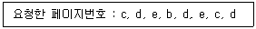
- 3번
- 4번
- 5번
- 6번
(정답률: 41%)
66. SJF(Shortest Job First) 스케줄링에서 작업 도착 시간과 CPU 사용시간은 다음 표와 같다. 모든 작업들의 평균 대기시간은 얼마인가?
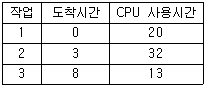
- 6
- 9
- 12
- 14
(정답률: 56%)
67. 가상기억장치에 대한 설명으로 옳지 않은 것은?
- 컴퓨터시스템의 주기억장치 용량보다 더 큰 저장용량을 주소로 지정할 수 있도록 해준다.
- 페이징과 세그먼테이션 기법을 이용하여 가상기억장치를 구현할 수 있다.
- 다중 프로그래밍의 효율을 높일 수 있다.
- 프로세스가 갖는 가상주소 공간상의 연속적인 주소가 실제 기억장치에서도 연속적이어야 한다.
(정답률: 64%)
68. 파일 내용을 화면에 표시하는 UNIX 명령은?
- cp
- mv
- rm
- cat
(정답률: 73%)
69. 워킹 셋(WORKING SET)의 의미로 가장 적합한 것은?
- 프로세스가 실행되는 동안 일부 페이지만 집중적으로 참조되는 경향을 의미한다.
- 최근에 참조된 기억장소가 가까운 장래에도 계속 참조될 가능성이 높음을 의미한다.
- 하나의 기억장소가 참조되면 그 근처의 기억장소가 계속 참조되는 경향이 있음을 의미한다.
- 프로세스가 효율적으로 실행되기 위해 프로세스에 의해 자주 참조되는 페이지들의 집합을 말한다.
(정답률: 66%)
70. 13K 작업을 다음 그림의 14K 공백의 작업공간에 할당했을 경우 사용된 기억장치 배치전략 기법은?
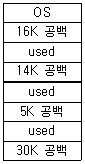
- Last fit
- First fit
- Worst fit
- Best fit
(정답률: 75%)
71. 다음 설명에 해당하는 디렉토리 구조는?
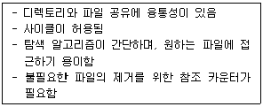
- 1단계 디렉토리 구조
- 2단계 디렉토리 구조
- 일반적인 그래프 디렉토리 구조
- 트리 디렉토리 구조
(정답률: 47%)
72. UNIX에서 사용자 명령의 입력을 받아 시스템 기능을 수행하는 명령 해석기로서 사용자와 시스템 간의 인터페이스를 담당하는 것은?
- 커널(Kernel)
- 쉘(Shell)
- 유틸리티(Utility)
- 포트(Port)
(정답률: 61%)
73. 사용자 Password에 대한 설명으로 옳지 않은 것은?
- 추측 가능한 사용자의 전화번호, 생년월일 등으로는 구성하지 않는 것인 바람직하다.
- 암호가 짧을수록 추측에 의한 암호 발각 가능성이 희박하다.
- 암호는 자주 변경하는 것이 바람직하다.
- 불법 액세스를 방지하는데 사용된다.
(정답률: 77%)
74. 다음 프로세스에 대하여 HRN 기법으로 스케줄링 할 경우 우선 순위로 옳은 것은?
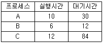
- B → C → A
- C → A → B
- B → A → C
- A → B → C
(정답률: 57%)
75. 프로세스(Process)의 의미로 거리가 먼 것은?
- 실행 중인 프로그램
- PCB의 존재로서 명시되는 것
- 동기적 행위를 일으키는 주체
- 프로시저가 활동 중인 것
(정답률: 65%)
76. 초기 헤드의 위치가 100번 트랙이고 디스크 대기 큐에 다음과 같은 순서의 액세스 요청이 대기 중이다. SSTF 스케줄링 기법을 사용하여 액세스 요청을 모두 처리할 경우 가장 마지막에 처리하는 트랙은?(단, 가장 안쪽 트랙 : 0, 가장 바깥 쪽 트랙 : 150)
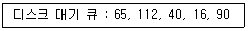
- 16
- 40
- 90
- 112
(정답률: 57%)
77. UNIX의 특징이 아닌 것은?
- Multi-User, Multi-Tasking 지원
- 대화식 운영체제
- 높은 이식성
- 2단계 디렉토리 구조
(정답률: 69%)
78. 운영체제의 기능으로 거리가 먼 것은?
- 사용자 인터페이스 제공
- 자원 스케줄링
- 데이터의 공유
- 원시 프로그램을 목적 프로그램으로 변환
(정답률: 72%)
79. Round-Robin 스케줄링(Scheduling) 방식에 대한 설명으로 옳지 않은 것은?
- 할단된 시간(Time Slice) 내에 작업이 끝나지 않으면 대기 큐의 맨 뒤로 그 작업을 배치한다.
- 시간 할당량이 작아질수록 문맥교환 과부하는 상대적으로 낮아진다.
- 시간 할당량이 충분히 크면 FIFO 방식과 비슷하다.
- 적절한 응답시간이 보장되므로 시분할 시스템에 유용하다.
(정답률: 66%)
80. 자원 할당 그래프와 관계되는 교착상태 해결 기법은?
- Prevention
- Avoidance
- Recovery
- Detection
(정답률: 28%)
5과목: 정보통신개론
81. 다음 중 ITU-T(International Telecommunications Union Telecommunication)에서 1976년에 패킷교환망을 위한 표준으로, 처음 권고안을 발간한 프로토콜은?
- X.25
- I.9577
- CONP
- CLNP
(정답률: 70%)
82. 다음 중 CATV의 주요 구성 요소로 틀린 것은?
- 헤드엔드(HEAD-END)
- 모뎀
- 전송로
- 가입자 단말장치
(정답률: 40%)
83. 패킷교환망의 특징으로 틀린 것은?
- 장애 발생 시 대체 경로 선택 불가능하다.
- 프로토콜 및 속도 변환이 가능하다.
- 대량의 데이터 전송 시 전송 지연이 발생될 수 있다.
- 표준화된 프로토콜을 적용한다.
(정답률: 64%)
84. 실제로 전송할 데이터가 있는 단말장치에만 타임슬롯을 할당함으로써 전송 효율을 높일 수 있는 다중화 방식은?
- 동기식 다중화
- 광대역 다중화
- 통계적 시분할 다중화
- 주파수 분할 다중화
(정답률: 45%)
85. 동일 건물이나 인접한 건물에 있는 다양한 컴퓨터 기기들을 상호 연결하여 정보통신망에 연결된 다른 기기나 주변기기들과 공유할 수 있도록 설계한 네트워크 형태(topology)는?
- 패킷교환망(PSDN)
- 부가가치통신망(VAN)
- 근거리통신망(LAN)
- 공중전화망(PSTN)
(정답률: 71%)
86. 다음 중 에러검출과 정정이 가능한 것은?
- 수평패리티검사
- 수직패리티검사
- 정마크부호
- 해밍부호
(정답률: 61%)
87. 인터넷에 사용되고 있는 통신용 프로토콜은?
- IEEE 802
- TCP/IP
- CAT 5
- 10 Base T
(정답률: 72%)
88. RFC 821에 정의된 이메일 통신을 위한 인터넷 응용프로토콜인 SMTP의 잘 알려진 기본 포트는?
- 포트 21
- 포트 23
- 포트 25
- 포트 80
(정답률: 50%)
89. OSI 7계층 중 전송(transprot) 계층의 주요 기능으로 맞는 것은?
- 종단 간 신뢰성 있는 메시지의 전달기능 제공
- 코드변환 및 암호화, 데이터 압축 기능 제공
- 데이터 송수신의 기계적, 전기적 규격 정의
- 패킷을 목적지까지 전달 담당
(정답률: 48%)
90. X.25 프로토콜의 패킷계층에서 하나의 전송 링크를 통하여 여러 개의 논리적 연결을 제공하는 기능은?
- 흐름제어
- 에러제어
- 다중화
- 리셋과 리스타트
(정답률: 63%)
91. 광대역 종합 정보 통신망인 ATM 셀 (Cell)의 구조로 옳은 것은?
- Header : 5 octets, Payload : 53 octets
- Header : 5 octets, Payload : 48 octets
- Header : 5 octets, Payload : 50 octets
- Header : 6 octets, Payload : 52 octets
(정답률: 59%)
92. 접속된 두 장치 간에 한 번씩 교대로 데이터를 교환하는 통신방식은?
- 단방향 통신방식
- 반이중 통신방식
- 다방향 통신방식
- 전이중 통신방식
(정답률: 68%)
93. 다음 중 다중화(multiplexing)의 의미로 적합한 것은?
- 하나의 경로에 하나의 채널을 전송하는 기술
- 하나의 경로에 복수의 채널을 전송하는 기술
- 복수의 경로에 하나의 채널을 전송하는 기술
- 복수의 경로에 복수의 채널을 전송하는 기술
(정답률: 66%)
94. 어떤 회사에 8개의 장치가 완전히 연결된 망형 네트워크를 가지고 있다. 최소로 필요한 케이블의 연결 수(C)와 각 장치 당 포트 수(P)는 ?
- C=28, P=7
- C=28, P=8
- C=32, P=7
- C=32, P=8
(정답률: 39%)
95. OSI 7계층 중 프로세스간의 대화 제어 및 동기점을 이용한 효율적인 데이터 복수를 제공하는 계층은?
- 물리계층
- 네트워크계층
- 세션계층
- 표현계층
(정답률: 53%)
96. 데이터 통신에서 주국이 부국에게 전송할 데이터의 유무를 묻는 것은?
- Polling
- Calling
- Selection
- Link up
(정답률: 51%)
97. 채널효율을 최대로 하기 위해 블록의 길이를 동적으로 변경할 수 있는 ARQ(Automatic Repeat Request)방식은?
- 적응적(Adaptive) ARQ
- Stop-And-Wait ARQ
- 선택적(selective) ARQ
- Go-back-N 방식 ARQ
(정답률: 55%)
98. ISDN의 채널(channel)의 종류가 아닌 것은?
- B
- C
- D
- H
(정답률: 40%)
99. 문자 위주 동기전송에서 문자 동기를 나타내는 전송 제어 문자로 맞는 것은?
- SYN
- SOH
- ETX
- ENQ
(정답률: 55%)
100. 다음 중 정보통신시스템의 회선구성 또는 처리방식에 해당되지 않는 것은?
- 온-라인(On-line) 방식
- 트래픽(Traffic) 방식
- 일괄(Batch) 처리방식
- 실시간(Real time) 처리방식
(정답률: 51%)